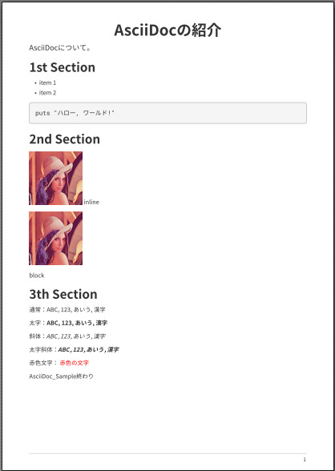

PDFの出力において、フォントを変えたくなることがあります。現在、「asciidoctor-pdf」が対応しているフォントは、TrueTypeフォント（ttfファイル）のみです。
ここでは、フリーで手に入る以下のフォントについて簡単に説明します
「源ノ角ゴシック」と「源ノ明朝」は、AdobeがGoogleと共同で開発した美しく汎用性に優れたオープンソースなフォントです。非常に有用なフォントですが、公式で提供されているのはOpenTypeフォーマットのみです。
以下に、「フォントのインストール方法」、「スタイルファイルの設定方法」を簡単に説明します。
必要なフォント（ttfファイル）をダウンロードします。
Rubyは「\lib\ruby\gems\[バージョン番号]\gems\」にライブラリがインストールされます。「asciidoctor-pdf」ライブラリのフォルダ下の「\data\fonts」にフォントをコピーしてください。
「asciidoctor-pdf」では、スタイルファイル(ymlファイル)でフォントの設定などを行います。デフォルトの設定ファイル 「default-theme.yml」をコピーして編集して使います。
「default-theme.yml」は、「asciidoctor-pdf」ライブラリのフォルダ下の「\data\themes」にあります。
ここでは「懐源ゴシック」がインストールされているとします。 「default-theme.yml」を以下のように編集し、 「my-theme.yml」作成します。
「font:」セクションを編集します。
元、
font:
catalog:
・・・
M+ 1mn:
normal: mplus1mn-regular-subset.ttf
bold: mplus1mn-bold-subset.ttf
italic: mplus1mn-italic-subset.ttf
bold_italic: mplus1mn-bold_italic-subset.ttf編集後、
font:
catalog:
・・・
M+ 1mn:
normal: mplus1mn-regular-subset.ttf
bold: mplus1mn-bold-subset.ttf
italic: mplus1mn-italic-subset.ttf
bold_italic: mplus1mn-bold_italic-subset.ttf
KaiGen Gothic JP:
normal: KaiGenGothicJP-Regular.ttf
bold: KaiGenGothicJP-Bold.ttf
italic: KaiGenGothicJP-Regular-Italic.ttf
bold_italic: KaiGenGothicJP-Bold-Italic.ttf
fallbacks:
- Noto Serifあとは、「Noto Serif」と「Roboto Mono」を「KaiGen Gothic JP」に変更してください。
「my-theme.yml」は、今回の例ではAsciiDocファイルと同じフォルダに設置します。AsciiDocファイルの先頭で以下のように記述します。
:pdf-style: my-theme.yml
こちらにサンプルをおいておきます。
AsciiDocファイルの属性で以下のように設定すれば、所望のフォルダのフォントを参照することができます。たくさんのフォントをインストールする場合には便利かもしれません。
:pdf-fontsdir: c:/Fontsただし、指定したフォルダのみの参照になります。
つまり、「asciidoctor-pdf」ライブラリのフォルダ下の「data\fonts」に、標準でインストールされているフォントがあります。「asciidoctor-pdf-1.5.0.beta.7」においては、「mplus1mn-*.ttf」と「notoserif-*.ttf」です。この2種類のフォントもコピーしないと使うことができません。
注意してください。